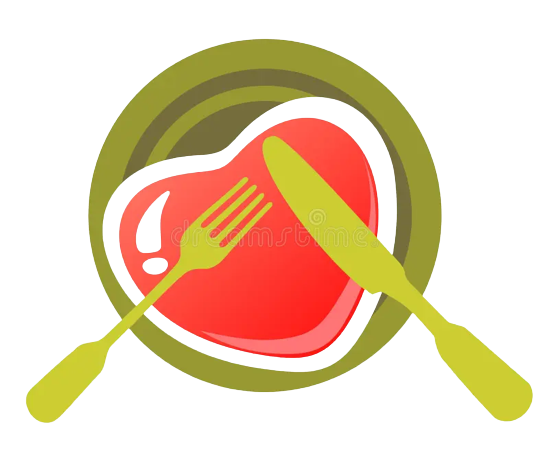

<div class="container">
  <div class="sidebar">
    <div class="logo">
      
      <span>Suivi-Regi</span>
    </div>
    <nav>
      <ul>
        <li>
          <a routerLink="/repaspage" class="icon">
            <span class="material-symbols-outlined">menu</span>
            <span>MENU</span>
          </a>
        </li>
        <li>
          <a routerLink="/journal" class="icon">
            <span class="material-symbols-outlined">book</span>
            <span>JOURNAL ALIMENTAIRE</span>
          </a>
        </li>
        <li>
          <a routerLink="/planification" class="icon">
            <span class="material-symbols-outlined">folder</span>
            <span>PLANIFICATION</span>
          </a>
        </li>
        <li>
          <a routerLink="/suivi" class="icon">
            <span class="material-symbols-outlined">speed</span>
            <span>SUIVI OBJECTIFS</span>
          </a>
        </li>
      </ul>
    </nav>
  </div>
  <div class="contenu">
    <header>
      <div class="search">
        <input type="text" placeholder="Rechercher...">
        <button type="button">Rechercher</button>
      </div>
      <div class="user">
        <span class="material-symbols-outlined">mail</span>
        |
        <div class="user-icon">
          <span>Wiston Chirchill</span>
          <div class="user-i">
            <span class="material-symbols-outlined">person</span>
          </div>

        </div>
      </div>
    </header>
    <div class="router">
      <router-outlet></router-outlet>
    </div>

  </div>
</div>
